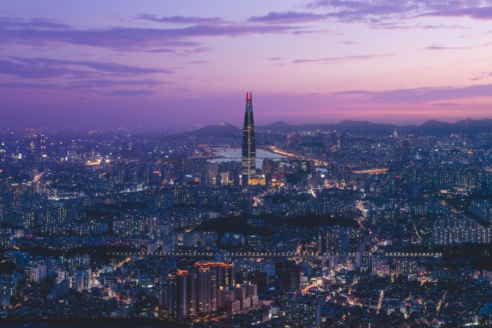

서울 소개

남한산성에서 본 서울의 야경
서울특별시는 대한민국의 수도, 그리고 최대도시이다. 평양시, 경주시, 개성시와 함께 오랜 역사를 가진 한반도의 고도 중 하나다.
법률상 대한민국 제1의 도시로 규정되어 있다. 현재 한국에서 유일한 특별시고, 수장인 서울특별시장은 한국 광역자치단체장 중 유일하게 장관급 대우를 받으며 국무회의 참여권 및 발언권이 있다.
서울특별시는 한국 제2의 도시인 부산광역시보다도 인구가 약 3배 더 많은 명실상부한 한국의 종주도시다.